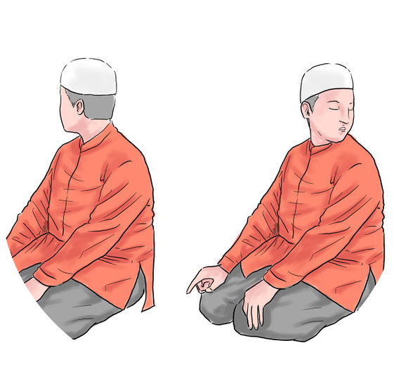

2nd Rakaat
Step 11

End the prayers with As-Salaam. After the tashahud, pray to Allah before signing off these movements and words:
Turn your head to the right and say:
Turn your head to the left and say:
As Salama Walaykum wa Rahmatullahi wa Barakatuhu
As Salama Walaykum wa Rahmatullahi wa Barakatuhu
The prayers have ended